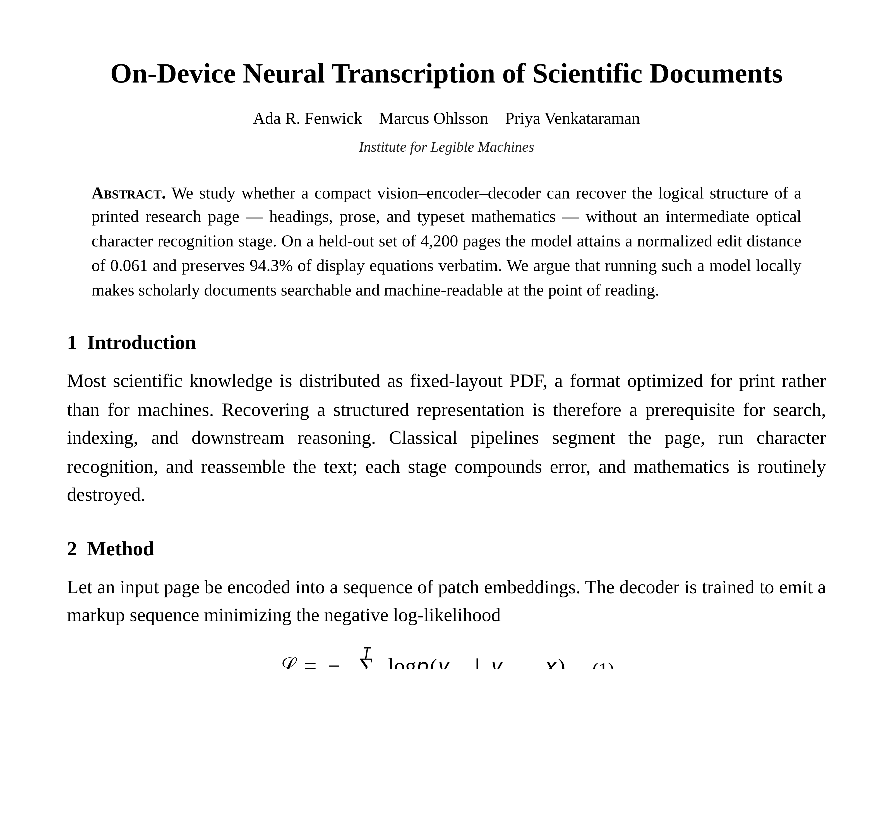
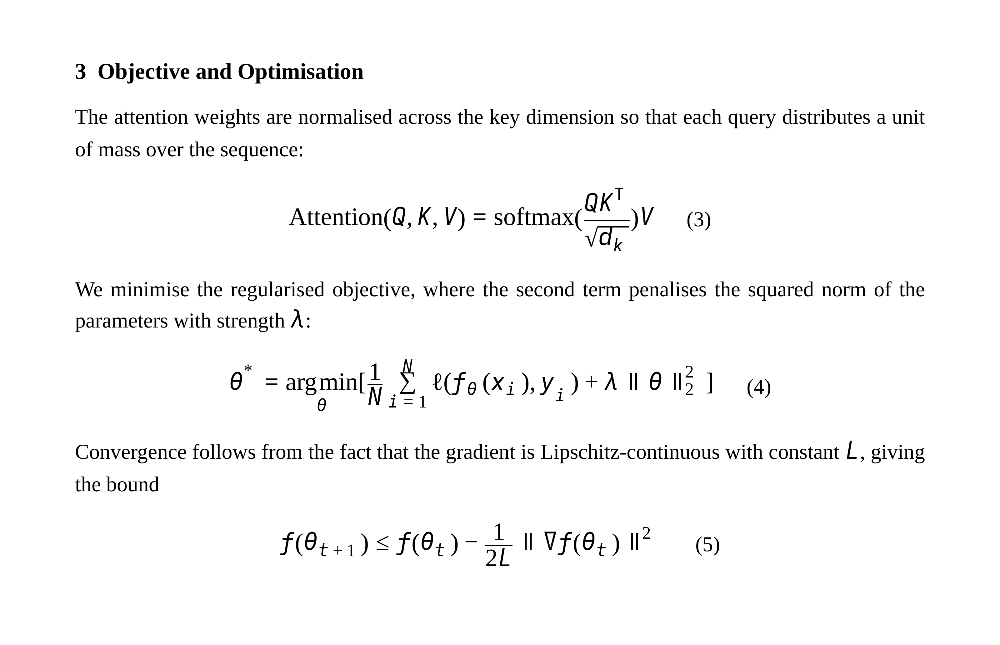
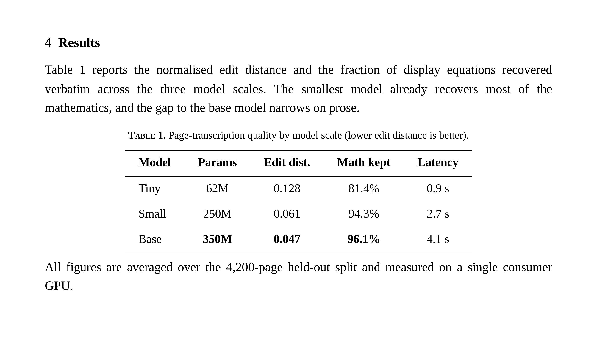

image-to-text · document page → Markdown+LaTeX · WASM · ~250 MB
Nougat is OCR done the way a person reads a paper: a vision transformer looks at an entire scanned page and a text decoder writes the page back out as structured Markdown — headings, prose, tables, and the equations preserved as LaTeX — one token at a time, entirely on your device.
| Model | Xenova/nougat-small (ONNX of facebook/nougat-small) |
|---|---|
| Task / pipeline | image-to-text |
| Architecture | Donut-Swin image encoder (896×672) → mBART-style text decoder — a VisionEncoderDecoder with cross-attention (~250M params) |
| Input | A whole document page image (a scanned/rendered research page works best) |
| Output | The full page as Markdown, with math kept as inline \( … \) / display \[ … \] LaTeX |
| Quantization | q8 (8-bit) ONNX — separate encoder + decoder graphs |
| Backend | WebAssembly (runs anywhere; no WebGPU needed) |
| Download | ~250 MB (77 MB encoder + 165 MB decoder), cached after first load |
| License | CC-BY-4.0 (facebook/nougat-small) |
| Web APIs | WebAssembly, Web Workers, Canvas, FileReader — all Baseline widely available |
Pick a page below or drop your own, then hit Transcribe page. Nougat reads the whole page at once (not a single line), so give it a full page image. Watch the Markdown form token by token, then flip between the rendered view and the raw Markdown+LaTeX.



A full page is long — more tokens transcribe more of it, but take longer.
Nougat is autoregressive generation, not character matching. The encoder reads
the page into patch embeddings once; then the decoder emits Markdown one token at a time, each
conditioned on the image and everything written so far — which is how it knows to open a
# heading, lay out a | table, or drop into \( … \) for
math. The trace shows every token as it arrived, with elapsed time; the panel beside it counts the
structure that emerged.
Decoded tokens (streamed):
| First token | – |
|---|---|
| Tokens/sec | – |
| Headings | – |
| Display equations | – |
| Inline math | – |
| Tables | – |
The world's science is locked in fixed-layout PDFs. Plain OCR can pull the words out, but it destroys exactly what makes a paper a paper: the headings that give it structure, the tables that hold the results, and the mathematics — which OCR turns into a soup of stray symbols. Nougat keeps all of it, and running it locally means you can do that to a document you'd never upload.
Transcribe a research page and see the Markdown structure it recovers.
Pull a results table off a page into a real Markdown/CSV table you can copy.
Feed it a wall of equations and watch the LaTeX come back, math intact.
Nougat → summariser: transcribe a page, then summarise it, all on-device.
The base call is two lines with Transformers.js:
import { pipeline } from "@huggingface/transformers";
const nougat = await pipeline(
"image-to-text",
"Xenova/nougat-small",
); // downloads + caches ~250 MB once
const out = await nougat(pageImageURL, { max_new_tokens: 300 });
// → [{ generated_text: "# Title\n\n## 1 Introduction\n\n… \\( \\mathcal{L} = -\\sum … \\)" }]
The important bit is the input: Nougat expects a whole page, not a single line —
its encoder is fixed at 896×672 and it's trained on full research pages. This page passes a
TextStreamer into the same call so "See inside" can render the Markdown as it forms
and time each token, and it does all of this off the main thread in a Web Worker. The raw output
is GitHub-flavoured Markdown with LaTeX math delimited by \( … \) and
\[ … \] — this page renders the structure and keeps the LaTeX verbatim.